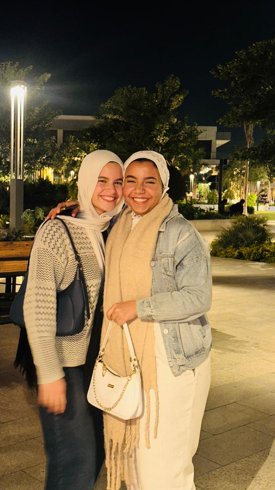
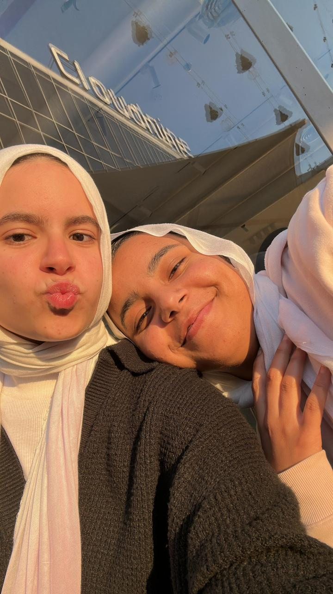
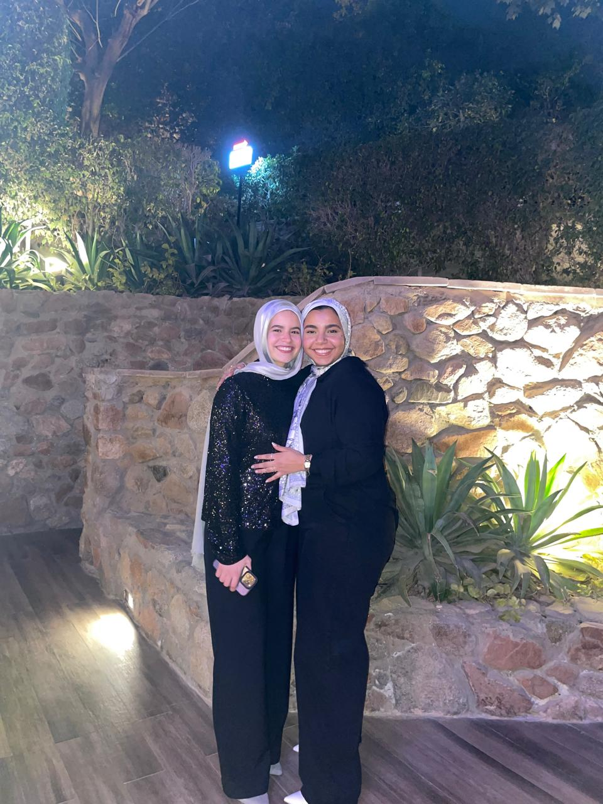
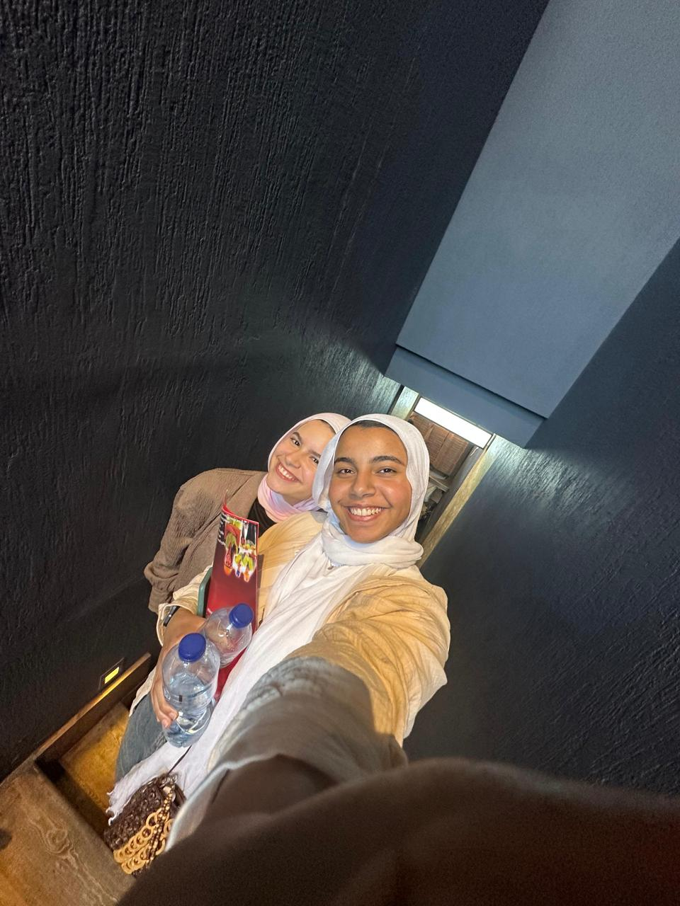

Becoming Best Friends
All your best memories in the same animated mobile style.



Tip: auto-scroll is on; you can scroll yourself anytime. Tap video card to play.
All your best memories in the same animated mobile style.




Tip: auto-scroll is on; you can scroll yourself anytime. Tap video card to play.